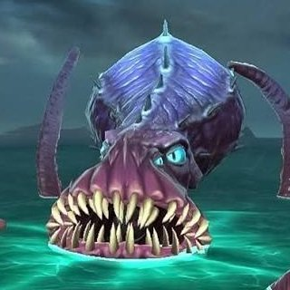
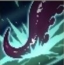
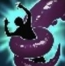
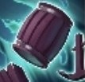

Troops, Heroes & Bosses › Bosses › Dagon

Dagon
Dagon, the Ancient Kraken, is a Glorious Hunt boss in Kingdom Clash, from level 1 to 300. It attacks with Basic attack, Tentacle Smash, Hungry Jaws, Gift From the Depths. Its passive abilities are Thick Skin and Slimy Scales. Pushing it all the way to level 300 takes 37,556,733 damage in total.
⚔️ Abilities
Each ability's numbers at levels 1, 50, 100, 150, 200, 250, 300 — the app shows any level from 1 to 300.
Basic attack
AttackIts normal attack, used between abilities.
| Level | 1 | 50 | 100 | 150 | 200 | 250 | 300 |
|---|---|---|---|---|---|---|---|
| Damage | 7,000 | 11,398 | 18,746 | 30,831 | 50,705 | 83,391 | 137,148 |
| Area radius | 25 | 25 | 25 | 25 | 25 | 25 | 25 |
| Cooldown | 3s | 3s | 3s | 3s | 3s | 3s | 3s |

Tentacle Smash
AttackDagon goes into a rage and delivers 3 powerful tentacle attacks on the ship's deck. Each boss level increases damage by 2%.
| Level | 1 | 50 | 100 | 150 | 200 | 250 | 300 |
|---|---|---|---|---|---|---|---|
| Damage per hit | 6,000 | 9,770 | 16,068 | 26,426 | 43,461 | 71,478 | 117,555 |
| Hits | 3 | 3 | 3 | 3 | 3 | 3 | 3 |
| Total damage | 18,000 | 29,310 | 48,204 | 79,278 | 130,383 | 214,434 | 352,665 |
| Cooldown | 18s | 18s | 18s | 18s | 18s | 18s | 18s |

Hungry Jaws
AttackDagon grabs the player's units with a tentacle, stuffs them into his maw, and starts digesting them. As the boss level increases, the number of units grows. A timely shot from the ship’s cannon will return the units to battle.
| Level | 1 | 50 | 100 | 150 | 200 | 250 | 300 |
|---|---|---|---|---|---|---|---|
| Units swallowed (at most) | 15 | 30 | 45 | 60 | 60 | 60 | 60 |
| Grab radius | 4 | 4 | 4 | 4 | 4 | 4 | 4 |
| Cooldown | 15s | 15s | 15s | 15s | 15s | 15s | 15s |
| Your ship's cannon: damage | 20,000 | 20,000 | 20,000 | 20,000 | 20,000 | 20,000 | 20,000 |
| Your cannon reloads in | 10s | 10s | 10s | 10s | 10s | 10s | 10s |

Gift From the Depths
AttackDagon pulls a massive barrel from the seabed and hurls it at the player’s troops, dealing massive area damage. Each boss level increases damage by 2%.
| Level | 1 | 50 | 100 | 150 | 200 | 250 | 300 |
|---|---|---|---|---|---|---|---|
| Damage | 8,000 | 13,027 | 21,424 | 35,235 | 57,949 | 95,304 | 156,740 |
| Area radius | 12 | 12 | 12 | 12 | 12 | 12 | 12 |
| Cooldown | 24s | 24s | 24s | 24s | 24s | 24s | 24s |
Thick Skin
PassiveDagon has increased resistance to melee unit attacks.
| Level | 1 | 50 | 100 | 150 | 200 | 250 | 300 |
|---|---|---|---|---|---|---|---|
| Damage taken from melee | −30% | −30% | −30% | −30% | −30% | −30% | −30% |
Slimy Scales
PassiveDagon has increased resistance to ranged unit attacks.
| Level | 1 | 50 | 100 | 150 | 200 | 250 | 300 |
|---|---|---|---|---|---|---|---|
| Damage taken from ranged | −30% | −30% | −30% | −30% | −30% | −30% | −30% |
📈 Pushing its level
How much damage it takes, in total, to push the boss to each level — and to the next one.
| Level | 1 | 50 | 100 | 150 | 200 | 250 | 300 |
|---|---|---|---|---|---|---|---|
| Damage to reach it | 0 | 1,269,064 | 3,389,428 | 6,876,646 | 12,611,836 | 22,044,112 | 37,556,733 |
| Damage for the next level | 20,000 | 32,892 | 54,096 | 88,968 | 146,320 | 240,643 | — |